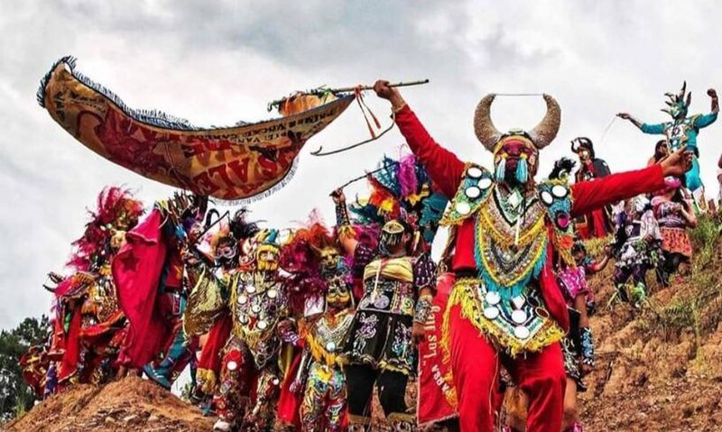
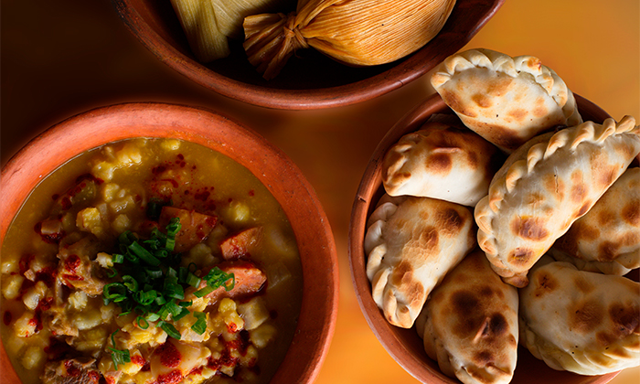

La provincia de Jujuy, ubicada en el noroeste de Argentina, es conocida por su impresionante belleza natural y su rica herencia cultural. Su capital es San Salvador de Jujuy, y cuenta con una población aproximada de 811,611 habitantes.
Jujuy se caracteriza por sus paisajes únicos, como la Quebrada de Humahuaca, declarada Patrimonio de la Humanidad, y el Cerro de los Siete Colores. Además, la provincia tiene una fuerte influencia de los pueblos originarios, como los quechuas y aimaras.
En términos económicos, destaca la producción de tabaco, azúcar y minería, además de ser un destino turístico popular durante todo el año. Su clima varía desde subtropical con estación seca en los valles hasta frío y árido en la Puna.
Tradiciones
Las tradiciones de Jujuy, Argentina, incluyen el Carnaval de la Quebrada con música y danza, la ceremonia de la Pachamama para agradecer a la Tierra, y la Fiesta Nacional de los Estudiantes con desfiles juveniles. También destacan las coplas, los instrumentos autóctonos y la gastronomía típica como el locro y las empanadas.

Gastronomía
La gastronomía de Jujuy se destaca por sus sabores tradicionales y recetas heredadas. Entre sus platos más emblemáticos están el locro, un guiso típico con maíz, carne y vegetales; la humita, hecha a base de choclo y envuelta en hojas de maíz; y las empanadas jujeñas, famosas por su relleno sabroso y bien condimentado. También son comunes las preparaciones con quinua y papa andina, ingredientes autóctonos de la región. Estas comidas reflejan la conexión entre la cultura jujeña y su entorno natural.

Cerro de los Siete Colores
El Cerro de los Siete Colores, ubicado en Purmamarca, Jujuy, es uno de los paisajes más emblemáticos de Argentina. Sus tonos vibrantes, formados a lo largo de millones de años, son el resultado de depósitos minerales y sedimentos. Este cerro no solo es un espectáculo visual, sino también un lugar lleno de historia y cultura que refleja la belleza única del noroeste argentino.